GOALKEEPERS


Among these talented goalkeepers, David De Gea has contributed his entire career to Manchester United with almost 11 years at the Old Trafford.
With the fact that De Gea is getting older and older, Dean Henderson is believed to be the next first-choice goalkeeper
of the team.
DEFENDERS


 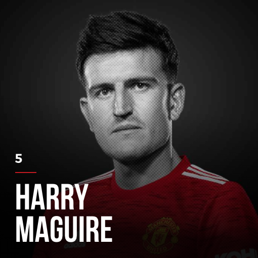
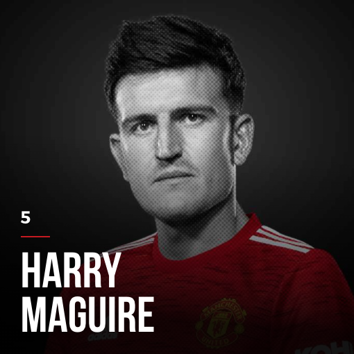

 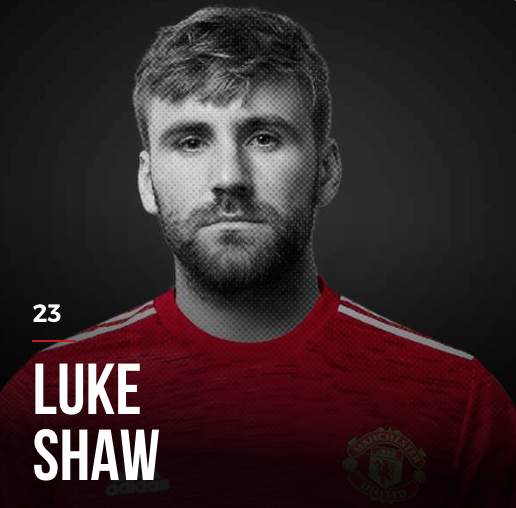
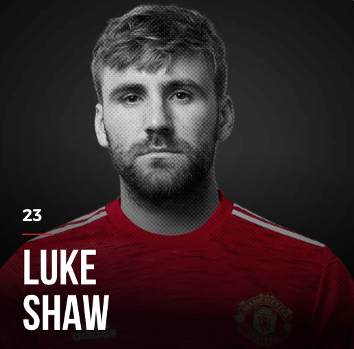


 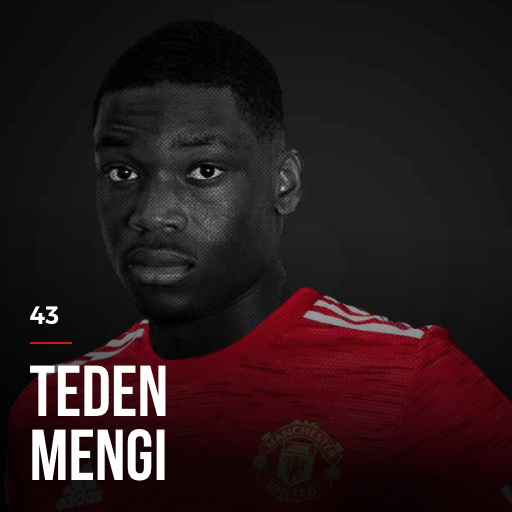
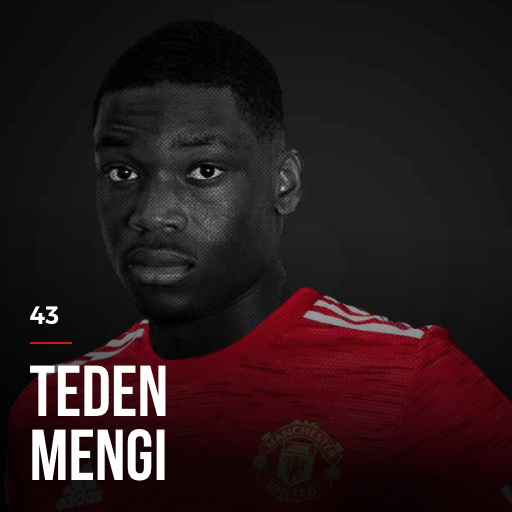
Harry Maguire is the current captain of Manchester United.
Phil Jones and Eric Bailley is prone to injuries, and frequently miss half of the season every year.
MIDFIELDERS
 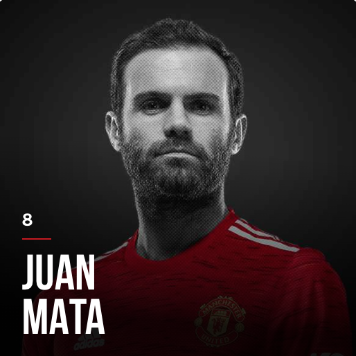
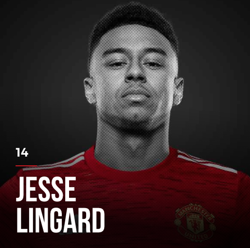
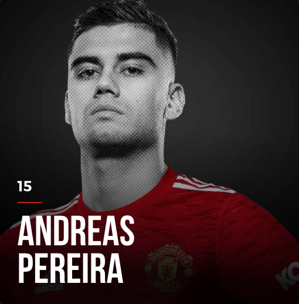
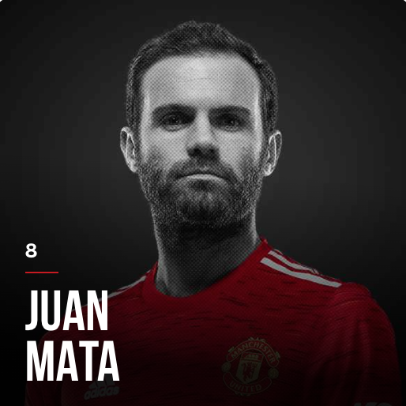
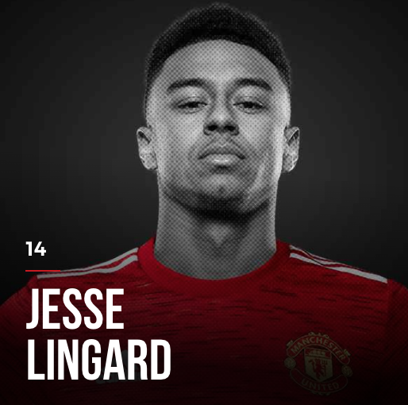
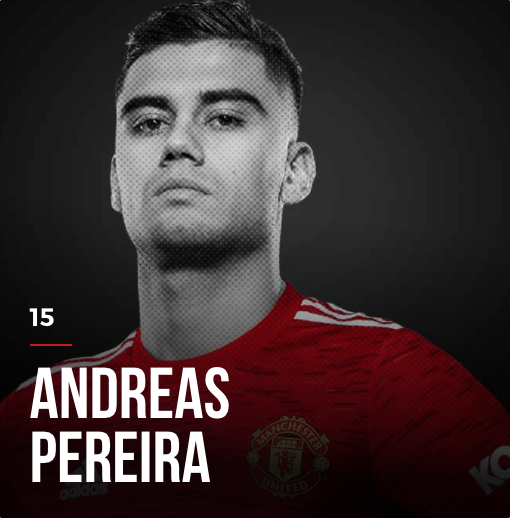
 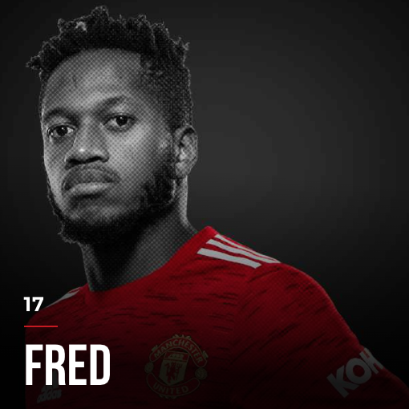
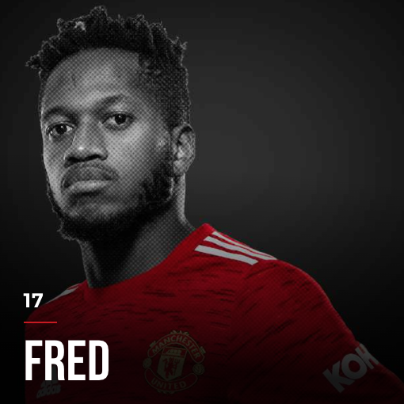


Paul Pogba is the only person in the squad who won the World Cup (2018) with France.
Scott McTominay is usually called "Mad Dog" for his passionate and chaotic style of play.
FORWARDS


Cristiano Ronaldo is one of the greatest-of-all-time soccer players. He has won 5 Ballon d'Ors and is the top scorer of all time with 803 goals in his entire career.
Marcus Rashford has been awarded MBE title by Queen Elizabeth II after contributions to stop famine among poor children in England.
Mason Greenwood is currently a golden boy of Manchester United for the ability to score many goals as a teenager.